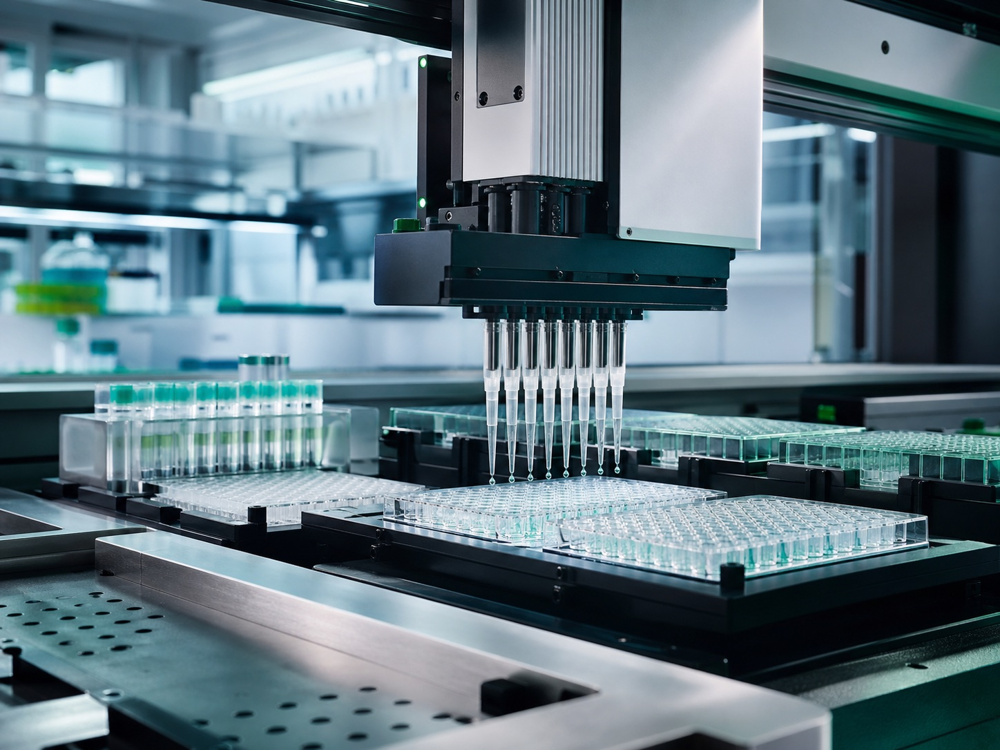
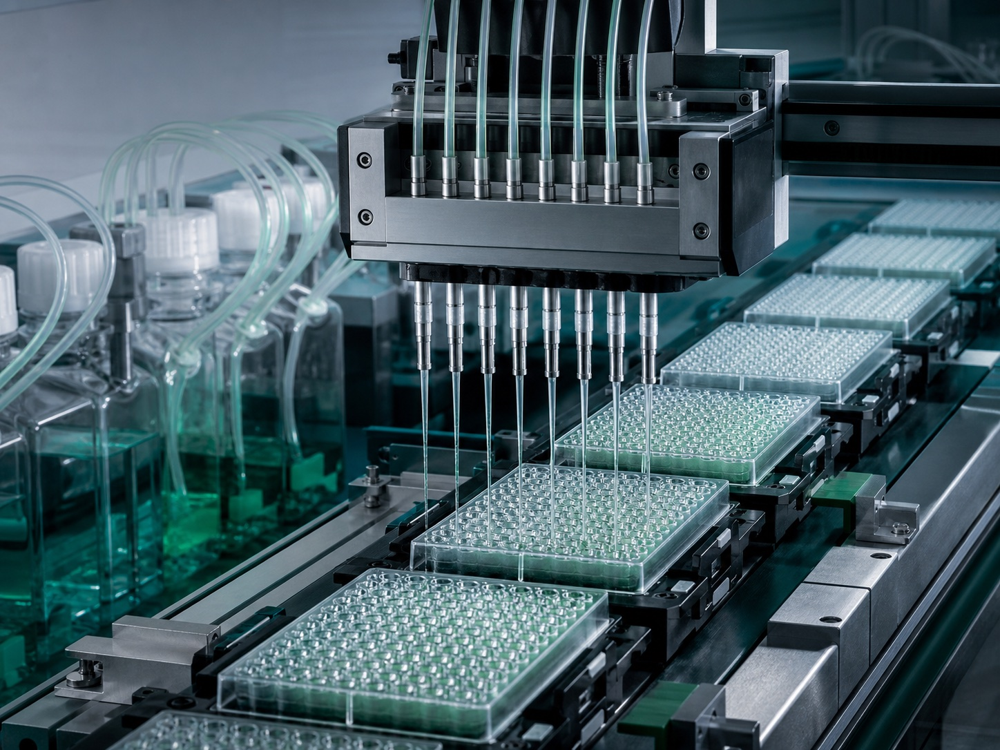
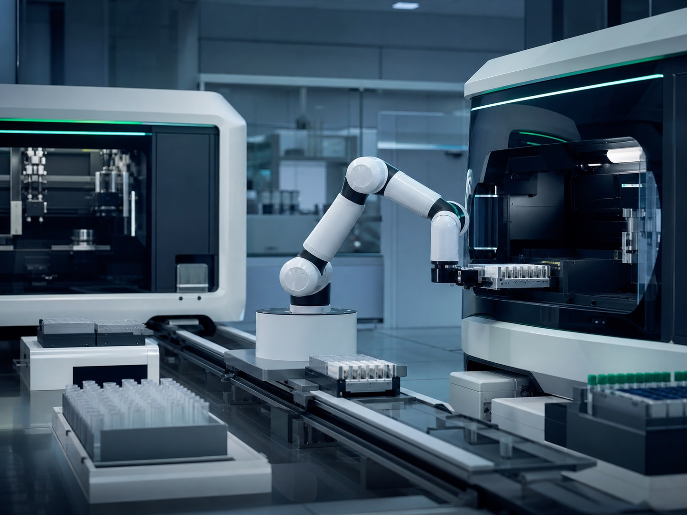
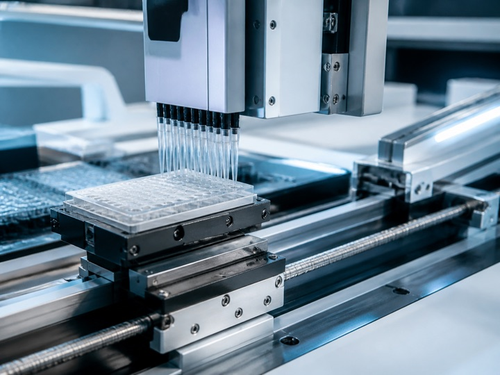
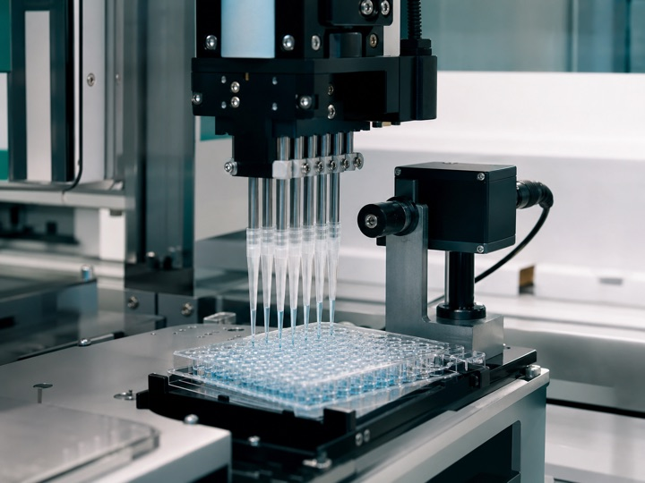
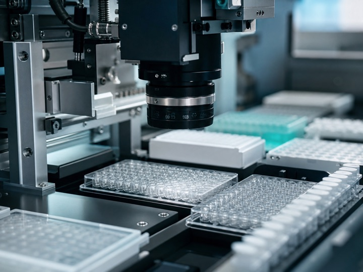

移液工作站
高精度自动化移液平台，替代人工高通量移液操作，兼容微孔板、试管等多种耗材，适配药物筛选、建库、样本前处理等高通量实验场景，实现批量实验无人值守运行。
AI4S Infrastructure
让实验更高效，更智能聚焦科学自动化硬件底座，面向物质科学发现，打造下一代AI自驱实验室。
药物研发 · 体外诊断样本处理 · 合成生物学
Core Automation Hardware
面向AI驱动实验室的标准化硬件底座，覆盖液体处理到自动上样全流程。

高精度自动化移液平台，替代人工高通量移液操作，兼容微孔板、试管等多种耗材，适配药物筛选、建库、样本前处理等高通量实验场景，实现批量实验无人值守运行。

高速智能分液设备，大体积/微量分液双模式，提供稳定的液体分配性能，满足试剂分装、体系配制、培养基分配等任务，大幅降低人工操作误差，适配高通量样本批量制备。

多自由度复合机器人系统，打通设备之间样本流转，完成样本转运、上下料、仪器对接，实现多台实验仪器联动，是构建无人化实验室的核心执行单元。
Application Fields
以可组合的自动化硬件和流程集成能力，打通从样本处理到实验发现的执行链路。
面向高通量药物筛选、化合物库构建和靶点实验样本制备，减少人工操作偏差，提升批量实验的一致性。
覆盖高通量样本前处理、试剂分装和样本分板，提升处理通量与结果一致性，降低重复人工操作带来的风险。
服务菌株构建、质粒建库、高通量筛选和反应体系配制，支撑大规模工程试错与长期无人值守运行。
Product Scenarios
首页聚焦产品能够支撑的实验任务，型号、配置与技术参数统一在产品中心查看。
Technology Platform
只有设备能够被精准控制、客观验证并具备智能识别能力，实验自动化才能从一次性交付变成可复用的基础设施。
面向移液、分液和复合上样的高精度运动调度，支持多轴协同、重复定位控制与多设备联动。

围绕液体处理性能、重复定位、轨迹和可靠性建立验证体系，为选型、集成与稳定运行提供依据。

面向样本、耗材与设备状态建立识别、定位和检测能力，为流程校验、异常发现与自动化协同提供支持。

Company Value
昨非成立于2009年，以自主研发产品为起点，将液体操作、样品处理、软件控制、模块集成与应用服务沉淀为可持续扩展的能力组合。
持续服务生命科学自动化场景。
覆盖液体与样品处理关键环节。
包含专利及软件著作权。
从单机自动化走向多设备协同。
Co-build The Lab
从需求确认、样机测试到项目集成和持续优化，与客户共同建设可落地、可演进的自动化实验流程。
让自动化能力随着实验需求持续生长。
明确实验步骤、板型耗材、通量、液体特性和合规要求。
通过Demo与应用测试验证关键流程、精度和稳定性。
完成设备选型、模块配置、软件定制与第三方仪器对接。
伴随实验需求扩展，逐步连接更多设备与智能调度能力。